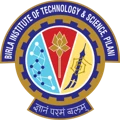

First the math, then the machines.

A mathematics degree from BITS Pilani, then a master's in Computer Science with an Intelligent Systems specialization at UT Dallas — the foundation under the AI research, the engineering, and every app since.
Full history on LinkedIn ↗01University of Texas at DallasM.S. Computer ScienceIntelligent Systems
Master's in Computer Science with an Intelligent Systems specialization.
- Natural Language Processing · Machine Learning · Artificial Intelligence
- Design and Analysis of Computer Algorithms
- Virtual Reality · Computer Animation and Gaming
02
BITS Pilani, Pilani CampusM.Sc. (Hons) MathematicsIndia
Master of Science with Honours in Mathematics.
- Probability and Statistics · Optimization
- Linear Algebra · Graphs and Networks · Topology
- UT Dallas Master's Summer Research Fellowship, 2020
- Jonsson School Graduate Study Scholarship, 2018 — Jonsson Scholar
- Selected for the DLRL Summer School 2020 from applicants across 88 countries
- 2020 CRA-WP Grad Cohort for Women participant
- CBSE Certificate of Merit in all subjects; top 1% of all examinees, 2010 and 2012
Have something in mind?
A collaboration, an idea, or just a hello.
I'd love to hear it.